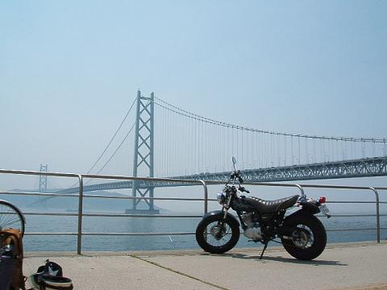
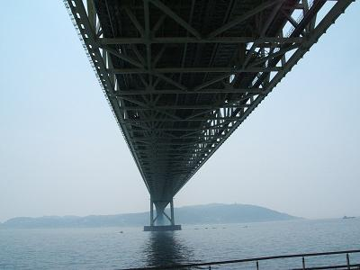
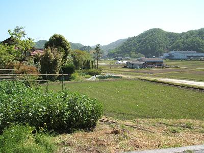
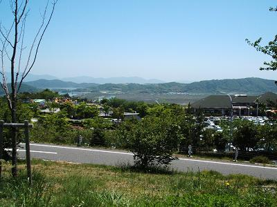
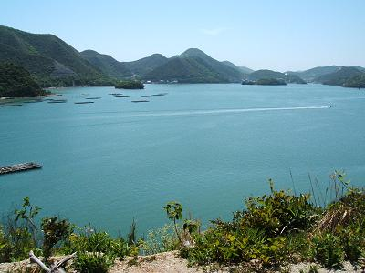
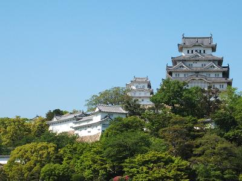
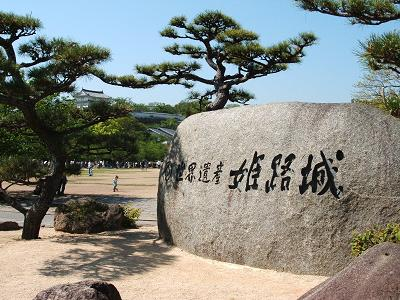
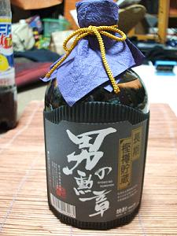

地図は大雑把だけどこんな感じですか、タケユキです。
バイクも買ったことだし、あったかくなってきたことだし、
ちょうどいいころだったんでバイクで帰省してみました。
朝の１０時半出発。
まずは２号線を目指し１７１号線、通称イナイチを南へ進む。
空は快晴、今日の最高気温は２８度、まさにツーリング日和。
アクセルを回す度に気持ちいい風が吹きつける。
まぶしく照りつける太陽。
・・照りつけすぎる太陽。
暑い。
半そでで走ってるのに、間違いなくまだ春なのに、
暑すぎる。
このままずっと走ってると日射病間違いなし。
とにかくどこかで休憩しようと走ること２時間弱。
明石海峡大橋に到着。

せっかくバイクで来たんだし橋を背景に撮ってみた。
超かっこいい。ええ自己満足ですけど。
明石海峡大橋の近くには舞妓公園ってちょっとした公園があるんでそこで休憩。
真下から見た明石海峡大橋
１時間ほど休憩して出発。
ここからはバイパスに乗って一気に走破、
加古川、姫路、太子龍野バイパスと続けて走り抜ける。
岡山県に入って周りの風景ががらりと変わる。
ド田舎大自然の世界へ。
コンビニやガソリンスタンドを見る機会が明らかに減った。
なのにコンビニはなぜかポプラの出現率が急上昇。
さらに西へ走ると
デオデオや
ウォンツが出現。
これらを見かけて初めて中国地方を実感して一人うれしくなる。
（デオデオやウォンツは中国地方にある電気・薬のチェーン店）
夕方ついに広島県へ入る。
県内に入ってからは大きな駅の周辺とか見たことある景色がちらほら。
もうここまでくれば地図見たりしなくても楽勝。
そうして夜７時、実家到着。
今回も親に帰るって伝えてなかったんで
びっくりするだろうなと思ってドアに手かけたら、
鍵かかって入れんかった・・自分ちなのに・・。
**************************************************
大阪広島間往復の復路は５月３日９：３０実家を出発。
当日朝の実家の前に広がる景色
帰省する度に田舎だよな〜って思うけど写真で見るともっと田舎っぽく見える。
てか田舎すぎじゃないのか、大丈夫か。
前日顔出しに行った塾の先生が
「どうせ暇なら北上して日本海沿いに帰ったらええじゃろ」
って言ってたんで福山(広島県の東)辺りから北上しようと思ってたんだけど、
出発してすぐに通った瀬戸内海沿いの道を走ったんだけど
海から吹きつける風がめっちゃ冷たくて北上を断念。
北上は夏にすることにします。
復路は来た道をそのまま帰るのはあんまり面白くないと思ったんで
岡山入ってから二号線をそれて
岡山ブルーラインへ。
このブルーラインってのはもともと有料道路だったけど
去年から無料開放されてたみたい。もうけた。
この道路には道の駅っていう高速でいうサービスエリアみたいなのがあって、
そこには展望台とかもあってとてもいい風景。
道の駅・一本松展望園から
この道の駅っていうのは地元の野菜とかも売ってて
連休のおかげもあってかかなり栄えてた、
荷物になるんで俺は野菜は買わんかったけど。
道の駅を超えてブルーライン終点近く、片上大橋を通過。
片上湾
ブルーラインを終えて二号線に合流、岡山県へ。
岡山県へ入って数十分、姫路へ。
ちょうど道路標識に「姫路城」ってのを見つけたので看板に従って左折
。
姫路城
直接見るのはたぶん初めて姫路城、でっかい。
明石海峡大橋の時みたいに城を背景にバイクの写真取りたかったけど
城の中までバイクで入れるわけもなく断念。

また２号線に戻って東に進んでたんだけど
このままじゃ面白くないと思って適当に道を外れてみた。
数十分後、
迷子になった事実を受け止める。
くやしいけどコンビニ寄って地図見ようか、
でもここで見たらなんか負けなような・・って葛藤してたら
ちょうど前に走ってるのはバス。
しかもバスの案内板には「
明石駅・北口行き」の文字。
きたーーーーっっっ！！！！
ツーリングの時バスが前走ってる時は
「トロトロ走んじゃねーよ、前見えんじゃねえか」とか
悪態ついてたのにこの時ばかりは
バス様の邪魔にならないように一歩後ろをコバンザメのごとくついて走る。
走ること十数分、明石駅に到着＆２号線に復帰。
ありがとうバスの運転手さん。
それからは２号線を決して外れることなく走行。
夕方、無事下宿に到着。
この帰省での総走行距離、６８７ｋｍ。
往復でのガソリン代：２２２９円。
このツーリング中、事故ってる現場を２箇所見かけたけど、
俺は事故に遭うこともなく無事終了。
この数日で一気に増えたメーターも、
日焼けでちょっとヒリヒリするこの腕も、
このツーリングで得た男の勲章。
今日の勲章：というわけで今日の寝酒は道の駅で買った
岡山の焼酎「
男の勲章」で一杯。

{kind=link}